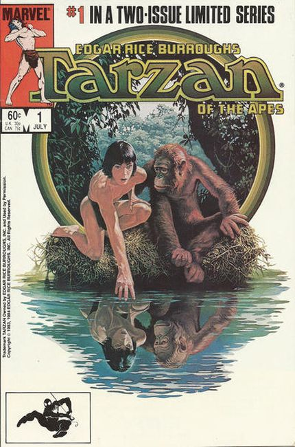
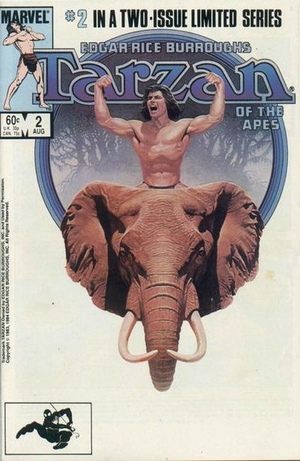

Greystoke: The Legend of Tarzan, Lord of the Apes is a 1984 British Technicolor adventure film directed by Hugh Hudson and based on Edgar Rice Burroughs' novel Tarzan of the Apes (1912). Christopher Lambert stars as Tarzan (though the name Tarzan is never used in the film's dialogue) and Andie MacDowell as Jane; the cast also includes Ralph Richardson (in his final film appearance), Ian Holm, James Fox, Cheryl Campbell, and Ian Charleson.
 
Series: 2 issues 1984
Publisher: Marvel
Comic adaptation of the 1984 movie Greystoke: The Legend of Tarzan, Lord of the Apes starring Christopher Lambert, Andie MacDowell, Ralph Richardson and Ian Holm. In this issue, Mr. and Mrs. Clayton are sent to Africa and are in trouble when a mutiny occurs on the ship they are traveling on. They are put ashore and struggle to survive. A son is born and then tragedy strikes as the parents die. But their son is adopted by apes and named Tarzan. Script by Sharman DiVono and Mark Evanier and art by Dan Spiegle.